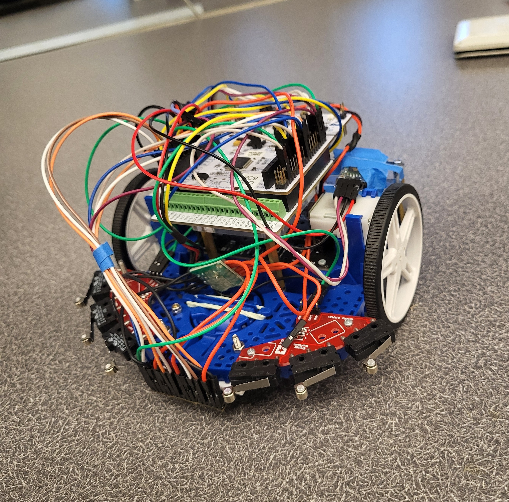

Romi Mechatronics Project

Media / Documentation
The full codebase and technical documentation are available through GitHub and Read the Docs. The documentation includes the project overview, hardware descriptions, wiring information, task architecture, code files, analysis, timed trial notes, and a summary of issues encountered during development.
This project was a mechatronics course project focused on building, programming, tuning, and documenting a Pololu Romi-based mobile robot. The goal was to create an embedded control system that allowed the robot to navigate a complex line course autonomously using sensors, motor feedback, state estimation, and closed-loop control.
Project Snapshot
| Project Type | Mechatronics, embedded systems, robotics, controls, documentation |
| Platform | Pololu Romi differential-drive robot with Nucleo microcontroller |
| Role | Embedded software development, control tuning, sensor integration, debugging, and technical documentation |
| Tools | Python / MicroPython, GitHub, Read the Docs, Sphinx, Nucleo board, IMU, encoders, IR light sensors, bump sensors |
| Status | Completed course project with working robot, public code repository, and project documentation |
Overview
Romi is a small differential-drive robot built around a Pololu chassis and motor system. The robot was programmed to follow a black line through a course using an array of IR light sensors. Sensor readings were processed to estimate the line position, and a PI controller adjusted the left and right wheel speeds to keep the robot centered on the path.
The project also used bump sensors and a high-level discrete state machine to help the robot estimate where it was within the course. The final system combined embedded software, motor control, sensor calibration, serial communication, data collection, and iterative debugging into one integrated robotic platform.
Problem / Goal
The engineering challenge was to make Romi navigate a line-following course as quickly and reliably as possible while dealing with real-world sensor noise, motor mismatch, timing limitations, hardware issues, and course features such as turns, dotted-line sections, obstacles, and wall/garage regions.
This required more than basic line following. The robot needed a task-based software architecture, tuned wheel-speed control, line sensor calibration, data logging, state estimation, and a strategy layer that could change behavior depending on where Romi was on the track.
My Role
My work focused on the embedded software and system integration needed to make the robot function as a complete mechatronic system. I contributed to the codebase, control logic, data collection, debugging workflow, sensor integration, project documentation, and final technical writeup.
- Developed and organized embedded Python code for the Romi/Nucleo platform.
- Implemented cooperative multitasking using separate task generators for sensing, control, user interface, and track behavior.
- Worked with encoder data, IMU readings, IR light sensors, bump sensors, and shared variables between tasks.
- Tuned PI control behavior for motor response and line-following performance.
- Documented the project with a GitHub repository and Sphinx/Read the Docs website.
- Debugged hardware/software issues including sensor behavior, motor control, state estimation, and communication problems.
Engineering Process
The project was developed through an iterative process of building the hardware platform, bringing up individual sensors and motors, writing task-based embedded software, collecting test data, tuning control gains, calibrating sensors, and refining course-specific behavior.
The software was structured using cooperative multitasking. Each task was responsible for a specific function, such as data collection, left motor control, right motor control, user interface commands, PI control, light sensor processing, IMU handling, or high-level track strategy. Shared variables and queues allowed the tasks to exchange information while keeping the code organized and modular.
Technical Work
Embedded Software Architecture
- Data collection task: sampled key internal variables such as wheel velocities, motor efforts, estimated states, and line position for debugging and analysis.
- Left and right motor tasks: read wheel encoder data and applied motor effort commands to control each side of the differential drive system.
- User interface task: provided a serial interface for testing, calibration, status checks, and tuning commands.
- PI controller task: converted error between setpoints and measured behavior into motor control output.
- Light sensor task: calibrated sensor readings, calculated line centroid, and generated steering corrections.
- IMU task: initialized and read orientation-related data used for heading estimation and track behavior.
- Track task: implemented the high-level state machine that selected robot behavior for different course regions.
Controls and Sensor Calibration
- Measured wheel velocity response over time to estimate motor time constants.
- Tuned proportional and integral gains to improve response speed, reduce overshoot, and maintain steady-state behavior.
- Calibrated IR light sensors using black and white reference readings to normalize line detection.
- Used IMU calibration offsets to improve orientation readings during the course.
- Modeled differential-drive behavior using wheel velocity, heading, arc distance, and state-estimation relationships.
Hardware Integration
- Pololu Romi chassis and motor/encoder assemblies
- Nucleo-L476RG microcontroller board
- BNO055 IMU for heading/orientation data
- Analog QTR reflectance sensors for black-line tracking
- Bump sensors for obstacle/contact detection
- HC-06 Bluetooth module for wireless communication attempts
- Motor driver and custom wiring between sensors, actuators, and controller hardware
Tools Used
- Programming: Python / MicroPython-style embedded code
- Controls: PI control, motor response tuning, line-following correction
- Sensors: IR line sensors, wheel encoders, IMU, bump sensors
- Documentation: GitHub, Sphinx, Read the Docs
- Debugging: serial communication, data logging, sensor calibration, iterative track testing
Results / Status
The final robot was able to navigate the line course and reach the wall/garage section. The system performed consistently through most of the course, although the dotted-line section created occasional line-loss behavior that could cause the robot to enter a circular failure mode. This gave the project a realistic engineering tradeoff: the robot worked, but remaining performance limitations were identified and documented.
The completed project includes a public GitHub repository containing the robot code and a Read the Docs site containing the technical documentation, hardware description, wiring information, task breakdown, code files, analysis, timed trial notes, and issues experienced.
Challenges and Debugging
- Bluetooth reliability: Bluetooth modules were damaged during testing, eventually limiting wireless communication.
- Nucleo pin issue: a bad PWM pin caused right motor control problems until the motor signal was moved to a different pin.
- State estimation timing: inconsistent task timing created jumps in calculated state-estimation values.
- IMU instability near metal structures: heading readings became volatile near the steel garage/cage section, requiring the robot to rely more heavily on encoder-based behavior in that region.
Key Takeaways
This project strengthened my ability to connect mechanical hardware, embedded software, sensors, control theory, and real-world testing into a single working robotic system. It also reinforced the importance of modular software architecture, calibration, debugging tools, and documentation when developing a system that must operate reliably outside of an ideal lab environment.
The most valuable engineering lesson was that successful mechatronics work depends on both theory and practical troubleshooting. Sensor noise, damaged hardware, timing delays, and unexpected environmental effects can dominate system behavior, so the design must include good test methods, calibration routines, and fallback strategies.